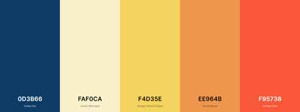

Color Scheme
The color scheme for dailybreeze.info will feature bright, happy colors that will help highlight and draw the audience in.

- Primary Color-Navigation Bar
#F95738-Orange Soda - Seconday Colors
#OD3B66-Indigo Dye and #F4D35E-Orange Yellow Crayola - Background Color
#FAFOCA-Lemon Meringue - Text Color
Black - Accent Color
#EE964B-Sandy Brown